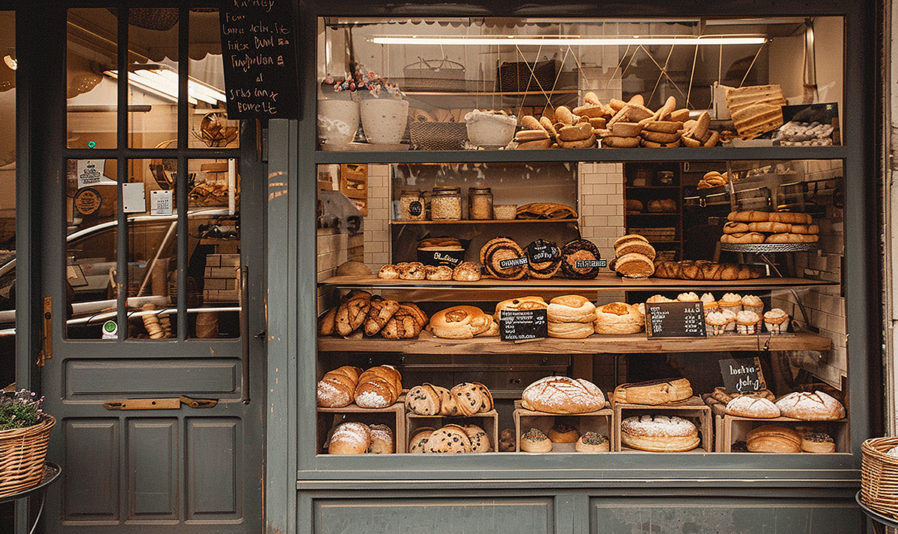

About North Star Bakery
Our Story

North Star Bakery started in 2015 as a small market stall with one oven and a single sourdough recipe. As more neighbors came back each week, we opened our storefront on Maple Street so we could bake fresh every morning. Today, we are still a small, family-run bakery that cares about knowing our customers by name.
Behind the Scenes
Take a short look inside our kitchen to see how our bread is mixed, shaped, and baked before the doors open.
In this short video with no sound, our baker uses a wooden peel to pull fresh, golden loaves out of the oven.
Our Sourcing Philosophy
We believe good bread starts with good ingredients. We buy flour from regional mills, eggs and dairy from nearby farms, and fruit from local growers when it is in season. Buying close to home means fresher ingredients and stronger support for our local community.
Meet Our Staff
- Maria, Head Baker: Maria has been baking bread for over 15 years and created our Signature Loaf.
- James, Pastry Chef: James makes our croissants, scones, and seasonal pastries.
- Priya, Cake Designer: Priya works with customers to design custom cakes for every kind of celebration.